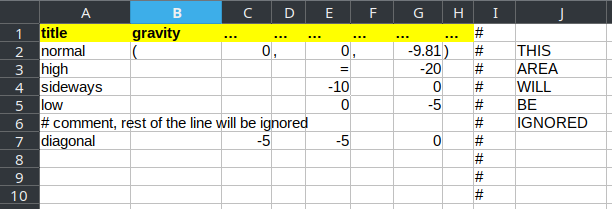

Batch system¶
Command-line options¶
Batch system allows one to run one simulation with different parameters and collect results from all simulations; it does so by managining CPU resources (cores) on the machine and running each sub-simulation when there is enough resources.
Usually, a batch is described by two files:
- simulation itself, which is one of
woo.core.Preprocessororwoo.core.Scene(saved in any supported file formats)python script to be run
- batch table
Simple file, plain-text or XLS, where each column is one parameter, and each line is one simulation.
Batch is invoked using the woo-batch command (wwoo-batch under Windows) and full help is obtained with --help:
usage: woo-batch [-h] [-j NUM] [--job-threads NUM] [--force-threads]
[--log FORMAT] [--global-log FILE] [-l LIST]
[--results RESULTSDB] [--nice NICE] [--cpu-affinity]
[--executable FILE] [--rebuild] [--debug] [--gnuplot FILE]
[--dry-run] [--http-wait] [--generate-manpage FILE]
[--plot-update TIME] [--plot-timeout TIME] [--refresh TIME]
[--timing COUNT] [--timing-output FILE] [--randomize]
[--no-table]
Let us summarize important parameters for everyday use:
-j THREADSNumber of threads (cores) used by the batch system. Defaults to number of cores on you machine, which is usually what you want.
--job-threadsNumber of threads for each simulation. Defaults to 1. Depending on size of the batch, you may want to increase this number. E.g. running a batch 2 simulations on a 6-core machine can take advantage of setting
--job-threads=3.--resultsResults from each simulation are written incrementally to a HDF5 <http://hdf.org> or SQLite file. This file, by default, named same as the batch table, but with the
.hdf5extension, but it can be changed.
Batch example¶
Let us use the woo.pre.horse.FallingHorse preprocessor as the basis for our example; suppose we want to study the influence of the dtSafety parameter, which will vary between 0.1 to 0.9. This example is shown in examples/horse-batch in the source distribution.
As exaplained above, we need one file with preprocessor and one file describing how to vary preprocessor parameters.
Preprocessor¶
Preprocessor can be saved from the user interface as text, but any loadable format is acceptable. Text file is the easiest to be inspected/modified by hand. The whole file must be a valid python expression:
##woo-expression##
#: import woo.pre.horse,woo.models,woo.dem
woo.pre.horse.FallingHorse(
radius=2*woo.unit['mm'],
pattern='hexa',
model=woo.models.ContactModelSelector(
name='linear',
damping=.4,
numMat=(1, 2),
matDesc=['particles', 'mesh'],
mats=[woo.dem.FrictMat(density=10000, id=-1, young=1e+06, tanPhi=0.5, ktDivKn=0.2)],
),
)
The ##woo-expression## denotes format of the file (for auto-detection; file extension is irrelevant), special comments starting with #: are executed before the expression is evaluted. Unit multipliers can be used via the woo.unit dictionary, as with mm. Arbitrary (including nested) expressions can be used (math.tan(.5), for instance). Unspecified parameters take their default values.
Table¶
Batch table is tabular representation of data, where each row represents one simulation, and each column one parameter value. The table can be given in text (space-separated columns) or as XLS file, where the first worksheet is used. # can be used for comments. The first non-empty line are column headers, each non-empty line afterwards is one simulation.
title |
dtSafety |
|---|---|
dt.9 |
0.9 |
dt.7 |
0.7 |
dt.4 |
0.4 |
dt.2 |
0.2 |
dt.1 |
0.1 |
dt.05 |
0.05 |
This table will run 6 simulations. The title column is optional; if not given, simulation title is created from values of other parameters. For details of table syntax (including default values, repeating previous values and comments) see woo.batch.TableParamReader.
Note
Simulation title can be used as basis for output files. In particular, Windows systems don’t allow many characters in filenames, which can lead to errors. Therefore, specifying the title column without dangerous characters is always advisable under Windows.
Enhanced table syntax¶
For ease of use, there are some special syntax rules when reading the table:
one preprocessor value can span multiple columns, indicated with
...(three dots) or…(unicode ellipsis character) in the column heading. In the example above, the gravity value spans 7 columns, which makes it easy to compute relevant values in excel. These columns will be concatenated and evaluated as Python expression.empty cells (or cells containing
=, as shown inE3) will assume the value of the first (valid, i.e. uncommented) cell above; it is an error to have empty cell (or=) in the first valid line.#starts comment and the rest of the line is ignored; this can be used not only for comments, but also for settings aside a part of the spreadsheet where calculations can be done.cell styling (colors, fonts) are ignored, thus can be used to make the table visually easier to read.
title |
gravity |
|---|---|
normal |
(0,0,-9.81) |
high |
(0,0,-20) |
sideways |
(0,-10,0) |
low |
(0,0,-5) |
diagonal |
(-5,-5,0) |
Special column names¶
Special column names start with ! and will not be passed to the preprocessor. Recognized special values are:
!THREADS(or!OMP_NUM_THREADS) which will set the number of threads/cores to use for parallel computation; this will override any value set with--job-threadswhen launching the batch.!TIMEwill set maximum execution time; this is used with the :src:`scripts/woo-slurm.py` script template which submits batch jobs to SLURM (batch scheduling system on HPC clusters).
Generated table¶
If a batch is to be run for all possible combinations of input parameters, use woo.batch.cartProdParamTable to generate the table, intead of writing it by hand.
Launching the batch¶
The batch is the ready to be run from the terminal:
$ woo-batch --job-threads=2 dt.xls dt.preprocessor
The --job-threads=2 option instructs the batch system to run each simulation on 2 cores, and will use all available cores (since -j was not given). Terminal output looks similar to
You can see how the batch system manages cores of the machine and schedules simulations to be run one after another. Each job leaves its output in logfile, usually under logs/*.log. Those files can be inspected if something goes wrong.
Batch also automatically opens webpage (served by the batch process), usually at http://localhost:9080 (depending on free ports on the machine), showing current status of the batch. It gives quick visual overview, easy access to log files, shows and updates plots:
Batch simulations produce per-simulation and aggregate results, as explained in the Postprocessing section.
Tip
Report issues or inclarities to github.